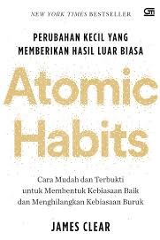
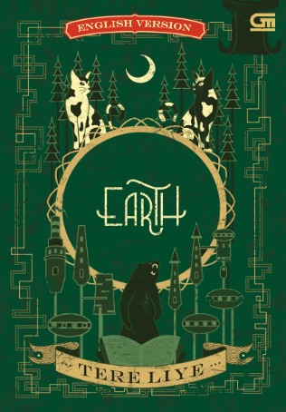
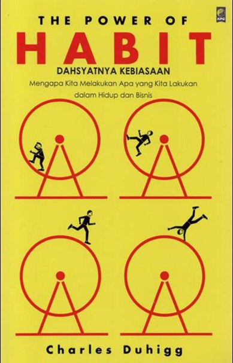
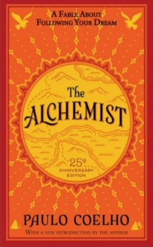

| Gambar Buku | Penulis, Penerbit, Tahun | Kutipan |
|---|---|---|
|
Judul: Laskar Pelangi (Fiksi) Penulis: Andrea Hirata Penerbit: Bentang Pustaka Tahun terbit: 2005 |
"Bermimpilah, karena Tuhan akan memeluk mimpi-mimpimu," | |
 |
Judul:Atomic Habits (Non-fiksi) Penulis: James Clear Penerbit: Avery Tahun terbit: 2018 |
“Kebiasaan atom adalah fondasi dari hasil yang luar biasa.” |
 |
Judul: Bumi (Fiksi) Penulis: Tere Liye Penerbit: Gramedia Pustaka Utama Tahun terbit: 2014 |
Kutipan tentang keberanian, persahabatan, dan petualangan menghadapi hal yang tidak dikenal. |
 |
Judul: The Power of Habit (Non-fiksi) (Non-fiksi) Penulis: Charles Duhigg Penerbit: Random House Tahun terbit: 2012 |
"Kebiasaan bukanlah takdir. Kebiasaan dapat diubah jika kita memahami cara kerjanya." |
 |
Judul: The Alchemist (Fiksi) Penulis: Paulo Coelho Penerbit: HarperOne Tahun terbit: 1988 |
"Ketika kamu menginginkan sesuatu dengan sungguh-sungguh, seluruh alam semesta akan membantu kamu untuk mencapainya." |
Navigasi cepat: Curriculum Vitae | College Experience